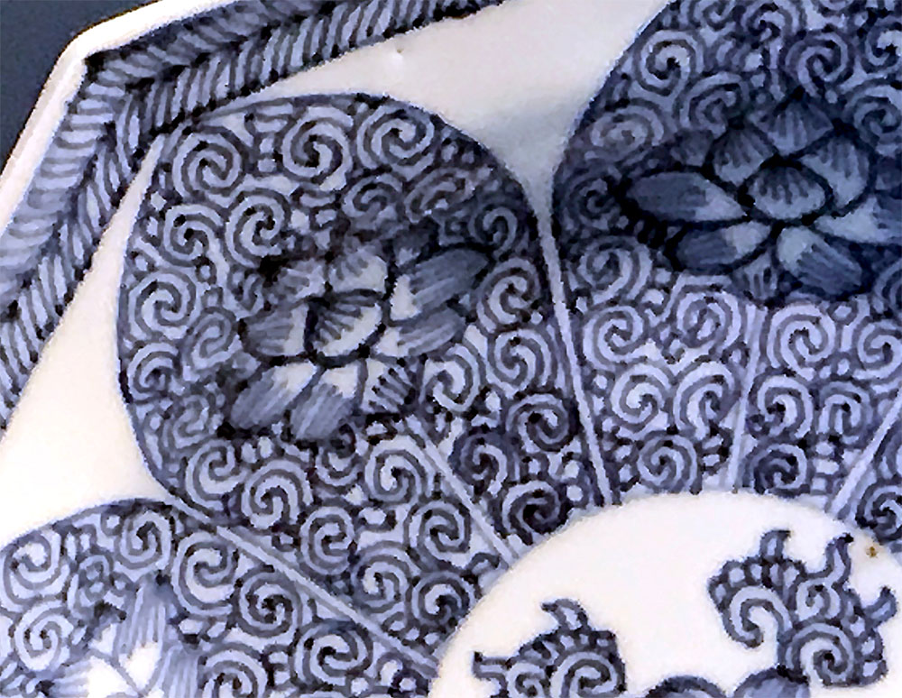
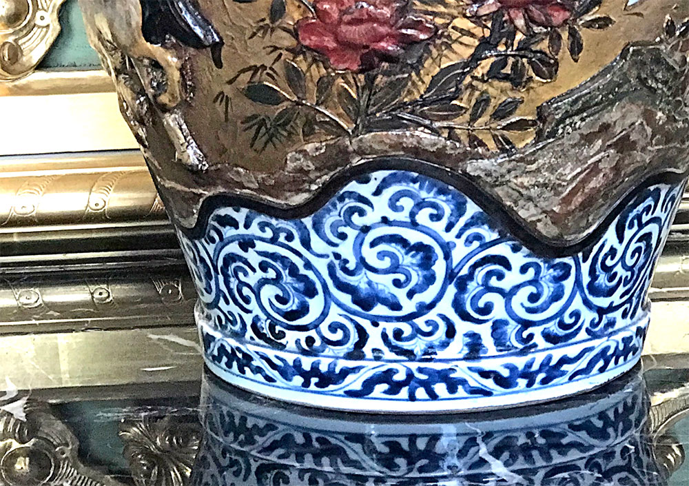
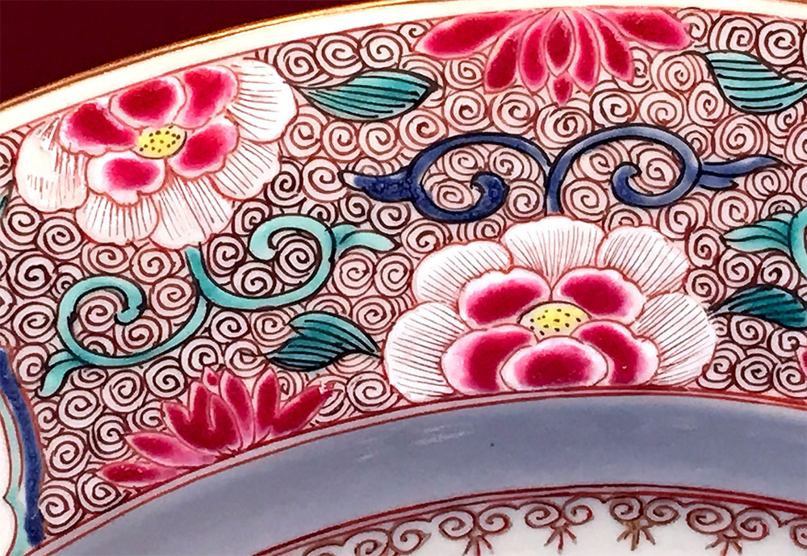
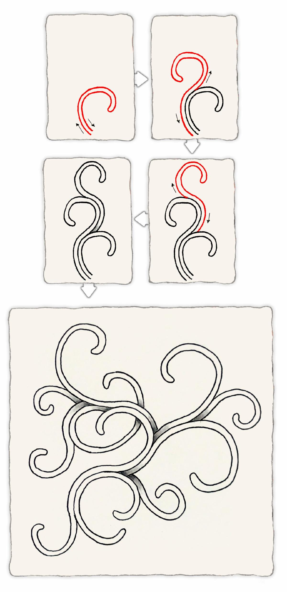
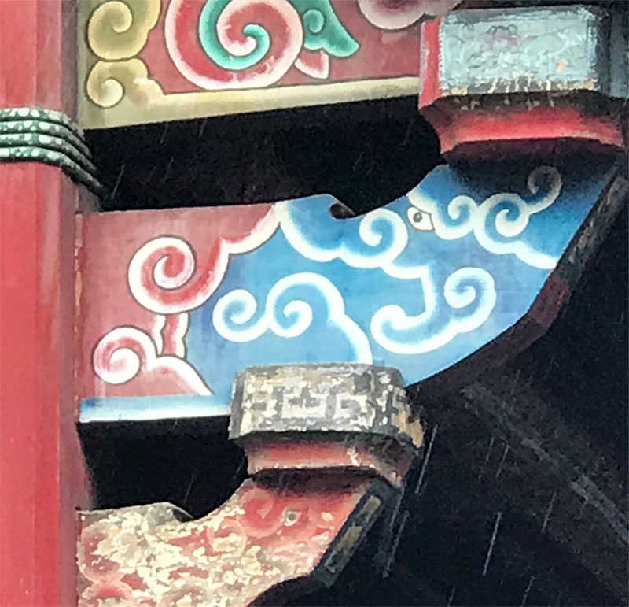
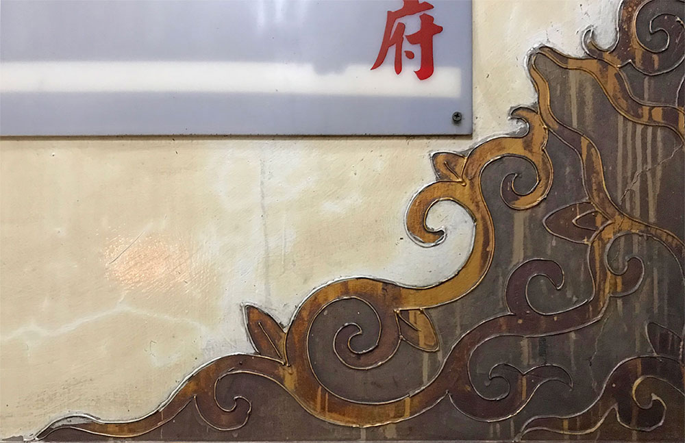
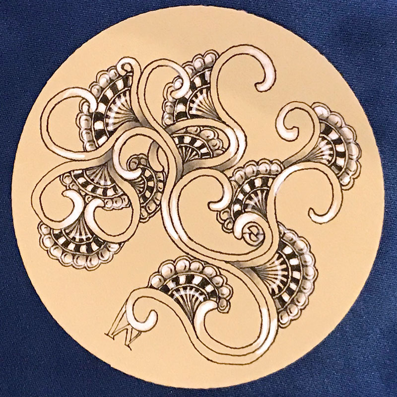
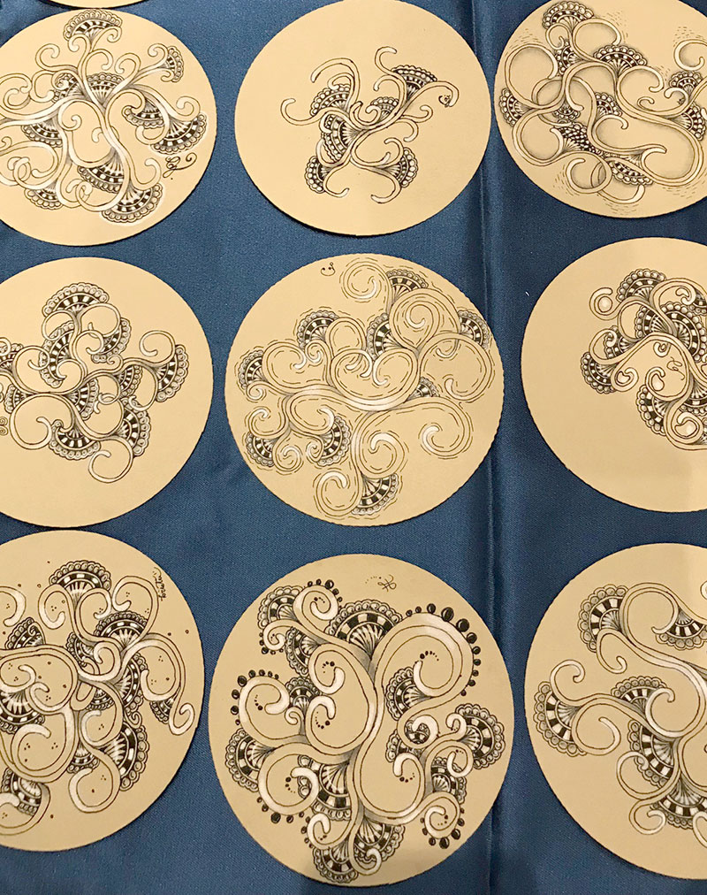
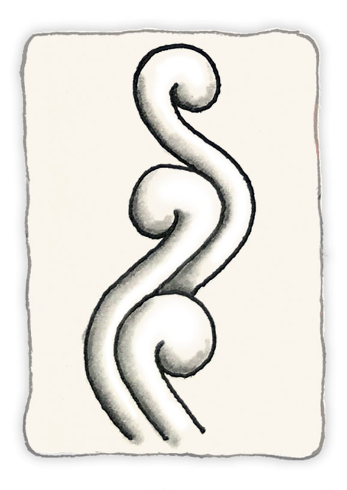

November 21, 2019
Hello,
下周是美國的感恩假期，每年的這個時候，我們都會談論許多關於感謝與感恩的事。
感恩展現了感謝的特質，樂於對良善的事物表達感激。感恩會成為禪繞畫方法的第一個和最後一個步驟並不是巧合，它也許是最重要的一個步驟。
正因如此，創作禪繞藝術的時候，會因為你帶著感恩的心，讓當下所使用的點、暗線、邊框以及這個範圍裡所填滿圖樣，都變得有意義！
禪繞畫方法帶給了我們許多禮物：藝術、創造力、內心的平靜時刻以及一個遍布全世界且令人讚嘆的藝術家社群。也許禪繞畫方法可以幫助我們去發現這些一直都在身邊的禮物。
在興奮以及充實的感恩節假期之前，我們用這封newsletter表達我們對你們的感恩，感謝各位在這一路上持續開創以及與我們分享你們旅程中發掘的驚奇禮物。
Rick提到:
我跟Maria先前在德國─法蘭克福參加歐洲首次舉辦的CZT seminar。活動結束後，我們去了慕尼黑。慕尼黑是座充滿博物館、教堂以及美麗建築的城市。我們花了許多時間流連在這些寶貴的建築物之中，試著從中發現新圖樣。
在一座博物館中，我們發現一個了中華文化的陶器。我們仔細留意上面的蛛絲馬跡，因為當時我們即將在台北和首爾各自有Zentangle的活動。這不就是一個絕妙的機會在這趟旅程中介紹一個源自亞洲的新圖樣。

這件陶器作品出自於清朝─康熙年間(1662-1722)，我們可以在上面看到迷人的筆劃。也許我可以從這些筆劃中，理出它的解構方法。
|
於是我尋找它的基本結構，看看是否能「發現」新圖樣，即便這個新圖樣並沒有很精確的複製原本的圖案。回去後，我從頭研究在博物館裡有用這種圖案創作的其他作品照片。
|

|
|

從下面的步驟分解圖中你會發現，我們使用了「光環(aura)」技巧圍繞整個圖樣。這基本的形狀就是線條本身的延伸弧線，而當你使用「從後面畫(draw behind)」時，你會發現立體公路(hollibaugh)穿梭其中。

當我們在台灣和首爾時，我們在博物館、廣場和廟宇中都有看見這個圖樣，以下照片就是在附近的兩座廟宇中所拍攝：
 
這這個圖樣同時也提供了能與其他圖樣搭配創作的架構。有注意到右上圖裡的分岔處還有衍生另外的圖形嗎？
Maria借用這樣的靈感，在卷草(hollis)所提供的百搭基底上，示範如何再加上其他的圖樣或是片段來創作。在下面的紙磚作品中，Maria加了些像月亮形狀的moon pie做點綴。
(moon pie是Maria第一次在台灣教卷草(hollis)的時，靈感乍現所創作出來的點綴圖形，並當場為它取了個名字。)

下圖是我們第一次教這個圖樣時的紙磚作品。

相信各位在這個圖樣上，會有許多不同方向的發揮，而我為自己設定了「優雅的限制」，我會讓第二個hollis緊連著第一個hollis的曲線(起飛的技巧)，接著再改變每一次延展出去的方向。
你也可以嘗試改變結束的形狀以及光環的寬度，例如：

如同所有的圖樣，我們都期待看到大家的各種創作，無論是單獨創作hollis，或是以hollis作為種子而發展出其他各種可能。
對了，為什麼我們要叫它Hollis呢？因為Hollis Littlecreek是一位教導我許多事情的人，包括如何製造以及演奏美國印地安笛。Hollis一生分享了許多美妙的禮物，我們相信當你在探索這個圖樣的時候，Hollis的這份禮物會帶給你創作的喜悅和舒適。
我們期待看到更多卷草(hollis)的創作。
Enjoy!
|
|
Thank you!
就在我們感謝與慶祝，並為即將到來的新年作準備之時，我們也獻上最誠摯的祝福，
祝福各位與你身邊的家人、朋友一切順利。
Rick, Maria, Martha, Molly 以及全體Zentangle同仁。
(當然還有Bijou)
|
|
|